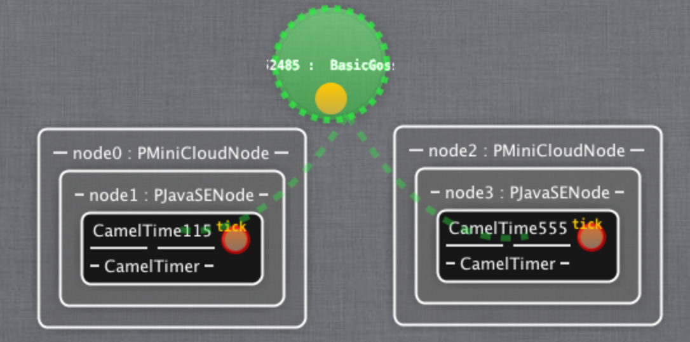

Kevoree : Model@Runtime
for distributed adaptive systems
G
+
g
3
(
)
by François FOUQUET, Serval Team, SnT 2013
-
Research topics
- Kevoree : research directions
- Industrial projects
- Publication strategy for 2013
>Reseach topics
Kevoree
Industrial
Publications
Dynamic Adaptive Systems (DAS)
- Adaptation any change without interruption
System A
System A'
- Adaptation reasoning needs a context
- Adaptation loop Monitoring Analyze Plan Eexecution (IBM'03)
- A model as abstraction during execution (Morin'09)
 S
S
model
reflect
- Model modification without effect on platform
S
- Causal link on demand
S
- Target model, current model after synchronization
D-M@R : local causal link, global vision
current model (view of node 0)
- At reception, Model@Runtime process state migration
- Model diff on node 0 specific part
(add module)
-
After diff applied , causal link respected
Distributed reflection leveraging models
Each node has a Model@Runtime layer
- Reflexive interaction (structural) through models
- Local interaction only
- After modification, propagation via the send model
- Node responsible of local causal link
Distributed Model@Runtime
- One global model
per node,
local causal link
- DDAS synchronization
M@R replicats synchronization
Reseach topics
>Kevoree
Industrial
Publication
M@R Reasoning
MicroSandbox
M@R access control
Modeling framework
Kevoree Genetic Reasoning (1/3)
Research questions ?

- Want to reduce the cost (used nodes) ?
- Want to use low consumption nodes ?
- Want to optimize replicaition ?
- Want to reduce components latency ?
Conflicting objectives !
Kevoree Genetic Reasoning (2/3)
Goal : framework to solve multi-objectives Kevoree model construction
- Genetic based algorithm to build Kev model
- Efficient enought to be executable @Runtime
- Built-in Kevoree evolution operators library
- Only express fitness functions and you're go !
- Shared on GitHub
- https://github.com/dukeboard/kevoree-genetic
Genetic cloud optimization (3/3)
Research question : detect equivalent mutations ?
Kevoree JVM MicroSandboxing (1/2)

Research questions ?
- Ensure Video viewer 25% of CPI time ?
- Ensure at least 20% for alert ?
- Dynamic component contract ?
- Action in case of overload ?
Collaborate with Inti (PhD student Rennes)
Kevoree JVM MicroSandboxing (2/2)
Common errors ?
- Dummy thread ?
- Full core taken by a thread !
- Time specification ?
- Magic number ! Depend on CPU power ?
- Action : remove component, paused threads ?
M@R contract driven scheduler intra-JVM
Kevoree adaptation access control
Research questions ?
- Does Node 3 can adapt Node 1 ?
- Can Node 3 trust node 1 ?
- M@R distributed adaptation control ?
- Model diff as resources
- Model@Runtime change policy
- Model signature for peers identification and rules selection
Crosscuting : Kevoree Modeling Framework
Efficient modeling framework
- Base for Kev, Kev Gen, CloudML, ThingML
- Cross-compile for JVM of JS engine
- Going to web based Model@Runtime ?
- Want to use it ?
- https://github.com/dukeboard/kevoree-modeling-framework.git
- Give the token for Greg
Reseach topics
Kevoree
>Industrial
Publications
Creos SmartGrid security
- First security analysis delivered Mai 2013
- Step 0 (current) : refine infrastructure security
- Step 1 : Going to study adaptation strategies
- Collector shutdown on IDS events ?
Defensive adaptive SmartGrid system ?
Successfully submitted !
- BiHOS (Grep, Patrice)
- Partnership (extension) with P&T
- Topic : SmartHome intelligent system

- OOPTICS (Donia, Yves)
- Partnership with EBRC
- Topic : Genetic based cloud reasoning framework
Multi-objective framework for Cloud Optimization
- Leverages Kevoree Cloud for modelisation
- Kevoree Genetic Framework for reasoning
Reseach topics
Kevoree
Industrial
>Publications
Norway
- Oslo SINTEF : (CloudML, ThingML)
France
- Nice : (SensApp Cloud, potential H2020 ?)
- Rennes : (Diversify, Cloud)
- Lille : (KMFQL, PowerAPI)
- Sosym journal : Models'2012 extension (KMF)
- CompArch journal : CBSE'2012 extension (uKevoree)
- GPCE 2013 : Genetic Sensor network reasoning
- GPCE 2013 ? : KMF2 (JS) Cross platform modeling framework
- ICSE 2014 : Distributed Model@Runtime
- ICSE 2014 : Genetic Cloud reasoning
- ICSE 2014 : MicroSandboxing, CBSE dynamic contract
- ? : Model@Runtime security